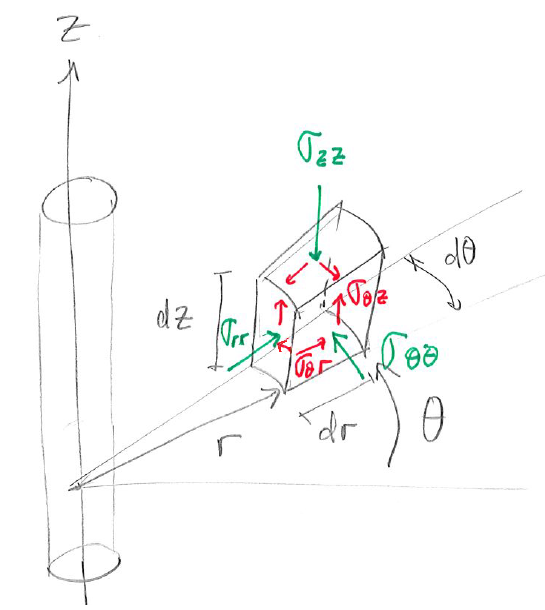
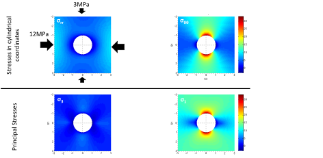
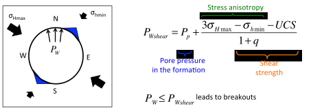
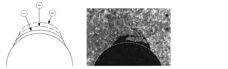
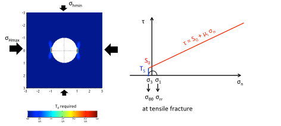
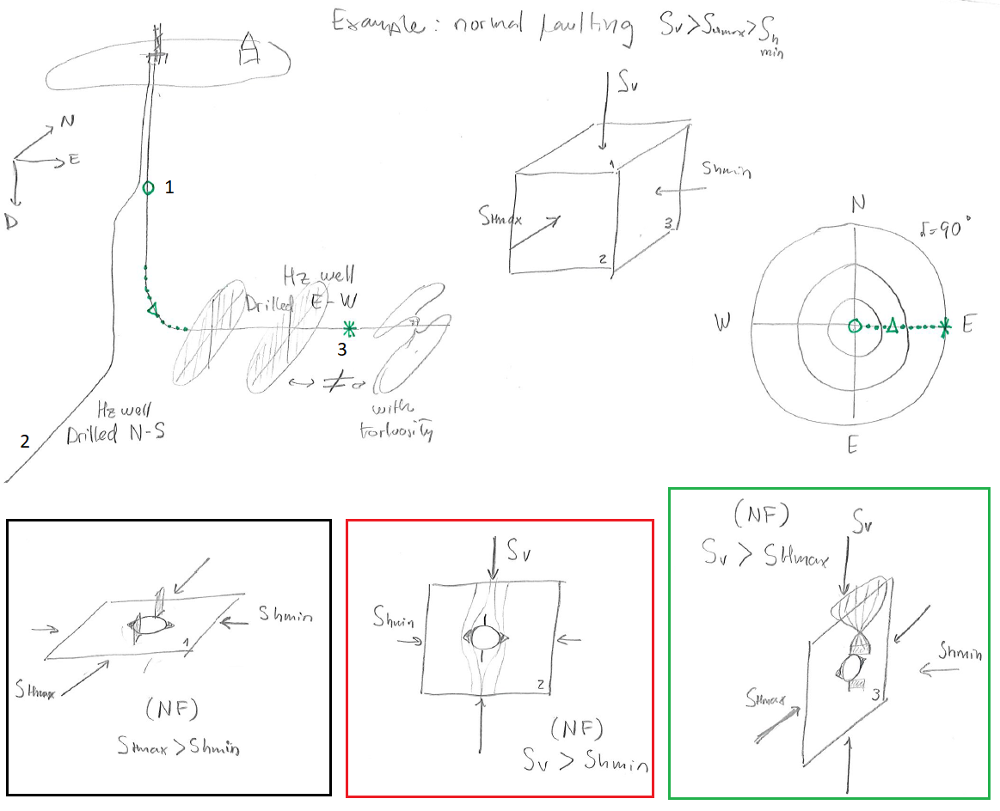
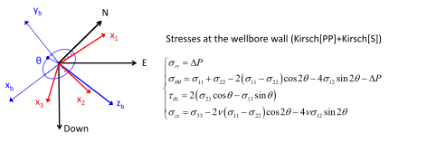
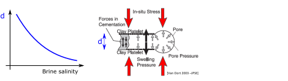

Next: 7. Hydraulic fracturing Up: Introduction to Energy Geomechanics Previous: 5. Stresses on Faults and Contents
Wellbore stability is critical for drilling. A stable open-hole requires the surrounding sediment and rock to bear the stresses that amplify around the wellbore cavity. The surrounding rock must hold stresses until casing is set or for undetermined time if left uncased.
Wellbore stability depends on two set of variables (Figure 6.1): one set which is out of our control and another set of variables that we can control.
 , pore presssure
, pore presssure  , and rock properties.
, and rock properties.
 (
( for wellbore), mud composition, mud fluid chemistry, and wellbore orientation (direction azimuth and deviation).
for wellbore), mud composition, mud fluid chemistry, and wellbore orientation (direction azimuth and deviation).
 |
The pressure in the wellbore is one of the main variables to maintain wellbore stability.
Mud (mass) density and vertical depth  (TVD) determine the mud hydrostatic pressure (in the absence of additional pressure controls at the surface - such as in managed pressure drilling):
(TVD) determine the mud hydrostatic pressure (in the absence of additional pressure controls at the surface - such as in managed pressure drilling):
| (6.1) |
The pressure gradient within the wellbore is proportional to mud density
(Fig. 6.2).
This quantity is usually measured and reported in p.p.g. (pounds-force per gallon).
For example the pressure gradient for fresh water is 9,800 N/m (= 9.8 MPa/km = 0.44 psi/ft), about 8.3 ppg.
The lithostatic gradient of 1 psi/ft is equivalent to 1 (psi/ft)
(= 9.8 MPa/km = 0.44 psi/ft), about 8.3 ppg.
The lithostatic gradient of 1 psi/ft is equivalent to 1 (psi/ft)  (8.3 ppg/0.44 (psi/ft)) = 18.9 ppg.
The “equivalent circulation density” is also reported in ppg and take into account pressure drops in the annulus.
(8.3 ppg/0.44 (psi/ft)) = 18.9 ppg.
The “equivalent circulation density” is also reported in ppg and take into account pressure drops in the annulus.
Over-balanced drilling implies . Over-balanced drilling favors the formation of a “mud-cake” or “filter-cake” on the wall of the wellbore which permits adding stress support on the wellbore wall approximately equal to (Fig. 6.4). The resulting effect is similar to an impermeable and elastic membrane applying a stress on the wellbore wall (similar to the membranes used in triaxial tests). Under-balanced drilling may be preferred in some specific instances.
 |
 |
The cylindrical symmetry of a wellbore prompts the utilization of a cylindrical coordinate system rather than a rectangular cartesian coordinate system.
The volume element of stresses in cylindrical coordinates is shown in Fig. 6.5.
The distance  is measured from the center axis of the wellbore.
The angle
is measured from the center axis of the wellbore.
The angle  is measured with respect to a predefined plane.
is measured with respect to a predefined plane.
 |
The normal stresses are radial stress
 , tangential or hoop stress
, tangential or hoop stress
 , and axial stress
.
The shear stresses are
, and axial stress
.
The shear stresses are
 ,
, and
.
,
, and
.
The Kirsch solution allows us to calculate normal and shear stresses around a circular cavity in a homogeneous linear elastic solid . The complete Kirsch solution assumes independent action of multiple factors, namely far-field isotropic stress, deviatoric stress, wellbore pressure and pore pressure.
 is shown in Fig. 6.6.
The presence of the wellbore amplifies compressive stresses 2 times
all around the wellbore wall in circumferential direction.
The presence of the wellbore cavity also creates infinitely large stress anisotropy at the wellbore wall
all around the wellbore wall, since
is shown in Fig. 6.6.
The presence of the wellbore amplifies compressive stresses 2 times
all around the wellbore wall in circumferential direction.
The presence of the wellbore cavity also creates infinitely large stress anisotropy at the wellbore wall
all around the wellbore wall, since
 in this case.
Stresses decrease inversely proportional to and are neglible at
in this case.
Stresses decrease inversely proportional to and are neglible at  4 radii from the wellbore wall.
4 radii from the wellbore wall.
is shown in Fig. 6.7.
We assume a non-porous solid now.
This assumption will be relaxed later on.
Wellbore pressure adds compression on the wellbore wall
, and induces cavity expansion and tensile hoop stresses
all around the wellbore.
 aligned with
is shown in Fig. 6.8.
The deviatoric stress results in compression on the wellbore wall
aligned with
is shown in Fig. 6.8.
The deviatoric stress results in compression on the wellbore wall
 at
at
 and , and in tension
at
and .
Hence, the presence of the wellbore amplifies compressive stresses 3 times
at
and .
The variation of stresses around the wellbore depend on harmonic functions
and
.
and , and in tension
at
and .
Hence, the presence of the wellbore amplifies compressive stresses 3 times
at
and .
The variation of stresses around the wellbore depend on harmonic functions
and
.
.
Consider a vertical wellbore subjected to horizontal stresses  and
and  , both principal stresses, vertical stress
, both principal stresses, vertical stress  , pore pressure , and wellbore pressure .
The corresponding effective in-situ stresses are
, pore pressure , and wellbore pressure .
The corresponding effective in-situ stresses are
 ,
,
 , and
, and  .
The Kirsch solution for a wellbore with radius within a linear elastic and isotropic solid is:
.
The Kirsch solution for a wellbore with radius within a linear elastic and isotropic solid is:
| (6.2) |
where
is the radial effective stress,
is the tangential (hoop) effective stress,
is the shear stress in a plane perpendicular to in tangential direction , and
is the vertical effective stress in direction .
The angle is the angle between the direction of and the point at which stress is considered.
The distance is measured from the center of the wellbore.
For example, at the wellbore wall .
An example of the solution of Kirsch equations for
MPa,
MPa, and
MPa is available in Figure 6.9.
The plots show radial
and tangential
effective stresses, as well as the calculated principal stresses  and
and
 .
.
 |
Let us obtain
and
at the wellbore wall .
The radial stress for all is
| (6.3) |
The hoop stress depends on ,
| (6.4) |
and it is the minimum at
and (azimuth of ) and the maximum at
and (azimuth of ):
 |
(6.5) |
These locations will be prone to develop tensile fractures (
and ) and shear fractures (
and ).
The shear stress around the wellbore wall is
 .
This makes sense because fluids (drilling mud) cannot apply steady shear stresses on the surface of a solid.
Finally, the effective vertical stress is
.
This makes sense because fluids (drilling mud) cannot apply steady shear stresses on the surface of a solid.
Finally, the effective vertical stress is
| (6.6) |
Wellbore breakouts are a type of rock failure around the wellbore wall and occur when the stress anisotropy
 surpasses the shear strength limit of the rock.
Maximum anisotropy is found at
and , for which
surpasses the shear strength limit of the rock.
Maximum anisotropy is found at
and , for which
 |
(6.7) |
 |
Hence, replacing  and into a shear failure equation (Eq. ) permits finding the mud pressure
and into a shear failure equation (Eq. ) permits finding the mud pressure
 that would produce a tiny shear failure (or breakout) at
and :
that would produce a tiny shear failure (or breakout) at
and :
![$\displaystyle \left[
-(P_W - P_p) +3 \: \sigma_{Hmax} -\sigma_{hmin}
\right] = UCS + q \left[ P_W - P_p \right]$](img914.svg) |
(6.8) |
Hence,
 |
(6.9) |
Mud pressure
 would extend rock failure and breakouts further in the neighborhood of
and (See Fig. 6.11).
Thus,
is the lowest mud pressure before initiation of breakouts.
would extend rock failure and breakouts further in the neighborhood of
and (See Fig. 6.11).
Thus,
is the lowest mud pressure before initiation of breakouts.
 |
PROBLEM 6.1: Calculate the minimum mud weight (ppg) in a vertical wellbore for avoiding shear failure (breakouts) in a site onshore at 7,000 ft of depth where  4,300 psi and
4,300 psi and  6,300 psi and with hydrostatic pore pressure.
The rock mechanical properties are
6,300 psi and with hydrostatic pore pressure.
The rock mechanical properties are  3,500 psi, 0.6, and
3,500 psi, 0.6, and  = 800 psi.
= 800 psi.
SOLUTION
Hydrostatic pore pressure results in:
 ft psi/ft psi
ft psi/ft psi
The effective horizontal stresses are:
 psi
psi psi
psi
 psi psi
psi psi psi
psi
The friction angle is
 , and therefore, the friction coefficient
, and therefore, the friction coefficient  is
is
Thus, the minimum mud pressure for avoiding shear failure (breakouts) is
 psi
psi
This pressure can be achieved with an equivalent circulation density of
For a given set of problem variables (far field stress, pore pressure, and mud pressure), we can calculate the required strength of the rock to have a stable wellbore.
Let us consider the example of Fig. 6.12 that shows the required  to resist shear failure assuming the friction angle is
to resist shear failure assuming the friction angle is
 .
For example, if the rock had a
.
For example, if the rock had a
 MPa, one may expect a
MPa, one may expect a
 wide breakout in Fig. 6.12.
wide breakout in Fig. 6.12.
![\includegraphics[scale=0.65]{.././Figures/split/7-6.pdf}](img935.svg) |
Alternatively, you could solve the previous problem analytically.
The procedure consists in setting shear failure at the point in the wellbore at an angle
 from or .
Hence, at a point on the wellbore wall at
:
from or .
Hence, at a point on the wellbore wall at
:
 |
(6.10) |
Say hoop stress reaches the maximum principal stress anisotropy allowed by the Mohr-Coulomb shear failure criterion (
 ) where the breakout begins (rock about to fail - Fig. 6.13), then
) where the breakout begins (rock about to fail - Fig. 6.13), then
![$\displaystyle \left[ -(P_W - P_p) + (\sigma_{Hmax} + \sigma_{hmin})
- 2(\sigma_{Hmax} - \sigma_{hmin}) \cos (2 \theta_B) \right]
= UCS + q (P_W - P_p)$](img942.svg) |
(6.11) |
which after some algebraic manipulations results in:
The breakout angle is
 |
(6.13) |
The procedure assumes the rock in the breakout (likely already gone) is still resisting hoop stresses and therefore it is not accurate for large breakouts (
 ).
).
You could also calculate the wellbore pressure for a predetermined breakout angle by rearranging Eq. 6.12 to
| (6.14) |
PROBLEM 6.2: Calculate the breakout angle in a vertical wellbore for a mud weight of 10 ppg in a site onshore at 7,000 ft of depth where 4,300 psi and 6,300 psi and with hydrostatic pore pressure.
The rock mechanical properties are 3,500 psi, 0.6, and = 800 psi.
SOLUTION
The problem variables are the same of Problem 6.1.
For a 10 ppg mud, the resulting mud pressure is
 ppg
ppg
Hence, the expected wellbore breakout angle is
![$\displaystyle w_{BO} = 180^{\circ} - \arccos \left[ \frac{ 3220 \text{ psi} + 1...
...3220 \text{ psi} - 1220 \text{ psi})} \right] = 66 ^{\circ} \: \: \blacksquare
$](img949.svg)
Breakouts and tensile induced fractures (Section 6.4) can be identified and measured with borehole imaging tools (Fig. 6.14).
Breakouts appear as wide bands of longer travel time or higher electrical resistivity in borehole images.
Tensile fractures appear as narrow stripes of longer travel time or higher electrical resistivity.
Borehole images also permit identifying the direction of the stresses that caused such breakouts or tensile induced fractures.
For example, the azimuth of breakouts coincides with the direction of in vertical wells.
![\includegraphics[scale=0.65]{.././Figures/split/7-8.pdf}](img950.svg) |
Breakouts can also be detected from caliper measurements. Caliper tools permit measuring directly the size and shape of the borehole (https://petrowiki.org/Openhole_caliper_logs). Thus, the caliper log is extremely useful to measure breakouts and extended breakouts (washouts). For the same mud density, the caliper log reflects changes of rock properties along the well and correlate with other well logging measurements.
Breakouts are a consequence of stress anisotropy in the plane perpendicular to the wellbore.
Hence, knowing the size and orientation of breakouts permits measuring and calculating the direction and magnitude of stresses that caused such breakouts.
This technique is very useful for measuring orientation of horizontal stresses.
In addition, if we know the rock properties and , then it is possible to calculate the maximum principal stress in the plane perpendicular to the wellbore. For example, for a vertical wellbore the total maximum horizontal stress would be
![$\displaystyle S_{Hmax} = P_p + \frac{UCS + (1+q)(P_W - P_p)
- \sigma_{hmin} \left[ 1 + 2 \cos (\pi - w_{BO}) \right]}
{1 - 2 \cos (\pi - w_{BO})}$](img951.svg) |
(6.15) |
Wellbore tensile (or open mode) fractures occur when the minimum principal stress on the wellbore wall goes below the limit for tensile stress: the tensile strength .
Unconsolidated sands have no tensile strength.
Hence, an open-mode fracture occurs early after effective stress goes to zero.
The minimum hoop stress is located on the wall of the wellbore  and at and (Fig. 6.15):
and at and (Fig. 6.15):
 |
(6.16) |
Notice that we have added a temperature term
 that takes into account wellbore cooling, an important phenomenon that contributes to tensile fractures in wellbores.
that takes into account wellbore cooling, an important phenomenon that contributes to tensile fractures in wellbores.
![\includegraphics[scale=0.65]{.././Figures/split/7-13.pdf}](img955.svg) |
Matching the lowest value of hoop stress
with tensile strength permits finding the mud pressure
 that would produce a tensile (or open mode) fracture:
that would produce a tensile (or open mode) fracture:
and therefore
 |
(6.18) |
The subscript  of
of  corresponds to “breakdown” pressure because in some cases when
corresponds to “breakdown” pressure because in some cases when  , a mud pressure
, a mud pressure  can create a hydraulic fracture that propagates far from the wellbore and causes lost circulation during drilling.
When
can create a hydraulic fracture that propagates far from the wellbore and causes lost circulation during drilling.
When  and , the mud pressure will produce short tensile fractures around the wellbore that do not propagate far from the wellbore.
and , the mud pressure will produce short tensile fractures around the wellbore that do not propagate far from the wellbore.
In the equations above we have added the contribution of thermal stresses
![$\sigma^{\Delta T} = [\alpha_T E/(1-\nu)] \Delta T$](img963.svg) where
where  is the linear thermal expansion coefficient and
is the linear thermal expansion coefficient and  is the change in temperature (
is the change in temperature (
 for
for
 ).
Wellbores are usually drilled and logged with drilling mud cooler than the formation
).
Wellbores are usually drilled and logged with drilling mud cooler than the formation
 .
Cooling leads to solid shrinkage and stress relaxation (a reduction of compression stresses).
Hence, ignoring thermal stresses is conservative for preventing breakouts but it is not for tensile fractures and should be taken into account when calculating .
.
Cooling leads to solid shrinkage and stress relaxation (a reduction of compression stresses).
Hence, ignoring thermal stresses is conservative for preventing breakouts but it is not for tensile fractures and should be taken into account when calculating .
Fig. 6.16 shows an example of calculation of the local minimum principal stress  around a wellbore.
The locations with the lowest stress align with the direction of the far-field maximum stress in the plane perpendicular to wellbore axis.
around a wellbore.
The locations with the lowest stress align with the direction of the far-field maximum stress in the plane perpendicular to wellbore axis.
 |
PROBLEM 6.3: Calculate the maximum mud weight (ppg) in a vertical wellbore for avoiding drilling-induced tensile fractures in a site onshore at 7,000 ft of depth where 4,300 psi and 6,300 psi and with hydrostatic pore pressure.
The rock mechanical properties are 3,500 psi, 0.6, and = 800 psi.
SOLUTION
The problem variables are the same of problem 6.1.
The breakdown pressure in the absence of thermal effects is
 psi
psi psi
psi psi psi
psi psi psi
psi

Similarly to breakouts, drilling-induced tensile fractures can be identified and measured with borehole imaging tools (Fig. 6.17).
The azimuth of tensile fractures coincides with the direction of in vertical wells.
![\includegraphics[scale=0.65]{.././Figures/split/7-15.pdf}](img975.svg) |
As seen in previous sections, low mud pressure (small mud wall support for hoop stress ) encourages shear failure while too much pressure encourages tensile fractures (well pressure adds tensile hoop stresses).
Hence there is a range of mud pressure for which the wellbore will remain stable during drilling.
This is called the mud window and has a lower bound (LB) and an upper bound (UB) which depend on wellbore mechanical stability as well as in other various technical requirements (Fig. 6.18).
Small breakouts
may not compromise wellbore stability and permit setting a lower (more flexible) bound for the mud window.
Large breakouts
 can lead to extensive shear failure and breakout growth which lead to stuck borehole assemblies and even wellbore collapse.
Likewise, small drilling-induced tensile fractures with wellbore pressure lower than the minimum principal stress can be safe and extend the upper bound for the mud window.
However, wellbore pressures above can result into uncontrolled mud-driven fracture propagation.
Eq. 6.17 may suggest a safe breakdown pressure value above the minimum principal stress .
However, this calculation assumes tensile strength everywhere in the the borehole wall.
Any rock flaw or fracture ( MPa) may reduce drastically .
can lead to extensive shear failure and breakout growth which lead to stuck borehole assemblies and even wellbore collapse.
Likewise, small drilling-induced tensile fractures with wellbore pressure lower than the minimum principal stress can be safe and extend the upper bound for the mud window.
However, wellbore pressures above can result into uncontrolled mud-driven fracture propagation.
Eq. 6.17 may suggest a safe breakdown pressure value above the minimum principal stress .
However, this calculation assumes tensile strength everywhere in the the borehole wall.
Any rock flaw or fracture ( MPa) may reduce drastically .
There are other factors to take into account in the determination of the mud window in addition to mechanical wellbore stability.
First, a mud pressure below the pore pressure will induce fluid flow from the formation into the wellbore.
The fluid flow rate will depend on the permeability of the formation.
Tight formations may be drilled underbalanced with negligible production of formation fluid.
High mud pressure with respect to the pore pressure will promote mud losses (by leak-off) and damage reservoir permeability.
Second, a mud pressure above the far field minimum principal stress may cause uncontrolled hydraulic fracture propagation and lost circulation events during drilling.
Maximizing the mud window (by taking advantage of geomechanical understanding among other variables) is extremely important to minimize the number of casing setting points and minimize drilling times (Fig. 6.19).
The mud pressure gradient in a wellbore
is a constant and depends directly on the mud density.
Therefore, drilling designs are based on the mud pressure with respect to a datum (usually the rotary Kelly bushing - RKB) expressed on terms of “equivalent density” to take into account viscous losses.
In any open-hole section the value of pressure in a plot equivalent density v.s. depth is a straight vertical line (Fig. 6.2).
The casing setting depth results from a selection of mud densities that cover the range between of the mud window as a function of depth.
Wider mud windows reduce the number of casing setting points.
Managed pressure drilling consist in modifying the mud pressure at surface (positive or negative increase) or a certain control depth, such that there is one more control on wellbore pressure. The mud weight determines the gradient. The surface pressure control can offset the origin of the pressure hydrostatic “line”. Hence, these two controls can help adjust the pressure along the wellbore to fit in between lower and upper bounds better than just one control (mud weight).
Last, drastic changes in the mud window may happen whenever there is anomalous pore pressure, either too high or too low. Highly overpressured environments are challenging for drilling because of small effective stress and therefore small rock/sediment strength. The mechanisms for overpressure are discussed in Section 2.2. Anomalously low pressure decreases the least principal stress and is usually encountered when drilling through depleted formations that have not been recharged naturally. This topic is explored in Section 2.2.3 and thoroughly documented in a case study listed in Suggested Reading for this chapter.
The following subsections present a guide for calculating stresses at the wall of deviated wellbores and identifying stress magnitudes and locations for shear failure (breakouts) and tensile fractures.
At any point along the trajectory of a deviated wellbore, the tangent orientation permits defining wellbore azimuth  and deviation
and deviation  (Fig. 6.20).
Azimuth is the angle between the projection of the trajectory on a horizontal plane and the North.
Deviation is the angle between a vertical line and the trajectory line at the point of consideration.
These two variables can be plotted in a half-hemisphere projection plot (stereonet).
Notice that a point in this plot represents just one point along a wellbore trajectory.
Fig. 6.20 shows an example of the full trajectory of a wellbore.
(Fig. 6.20).
Azimuth is the angle between the projection of the trajectory on a horizontal plane and the North.
Deviation is the angle between a vertical line and the trajectory line at the point of consideration.
These two variables can be plotted in a half-hemisphere projection plot (stereonet).
Notice that a point in this plot represents just one point along a wellbore trajectory.
Fig. 6.20 shows an example of the full trajectory of a wellbore.
![\includegraphics[scale=0.45]{.././Figures/split/7-DevSurvey.pdf}](img982.svg) |
A given state of stress will result in different mud windows and locations of rock failure depending on the wellbore orientation. Breakouts and tensile fractures will depend on the stresses on the plane perpendicular to the wellbore. Figure 6.21 shows an example for normal faulting with generic stress magnitude values.
 |
PROBLEM 6.4: Consider a place where vertical stress is a principal stress and the maximum horizontal stress acts in E-W direction.
SOLUTION
The solution below shows just one of the possible solutions of two horizontal wells.
Let us define a coordinate system for a point along the trajectory of a deviated wellbore.
The first element of the cartesian base goes from the center of a cross-section of the wellbore at a given depth to the deepest point around the cross-section (perpendicular to the axis).
The second element of the base goes from the center to the side on a horizontal plane.
The third element of the base  goes along the direction of the wellbore.
goes along the direction of the wellbore.
Based on the previous definition, it is possible to construct a transformation matrix that links the geographical coordinate system and the wellbore coordinate system.
Furthermore, the wellbore stresses can be calculated from the principal stress tensor according with:
| (6.20) |
Where
and  are the principal stress tensor and the corresponding change of coordinate matrix to the geographical coordinate system (Eq. 5.7).
The tensor
are the principal stress tensor and the corresponding change of coordinate matrix to the geographical coordinate system (Eq. 5.7).
The tensor
 is composed by the following stresses:
is composed by the following stresses:
| (6.21) |
Stresses on the plane of the cross-section of the deviated wellbore at the wellbore wall
 depend on far-field stresses
depend on far-field stresses
 ,
,
 ,
,
 ,
,
, and
.
The Kirsch equations require additional far field shear terms
,
,
, and
.
The Kirsch equations require additional far field shear terms
 ,
,
 , and
, and
 in order to account for principal stresses not coinciding with the wellbore orientation.
The solution of Kirsch equation for isotropic rock with far-field shear stresses is provided in Fig. 6.23.
in order to account for principal stresses not coinciding with the wellbore orientation.
The solution of Kirsch equation for isotropic rock with far-field shear stresses is provided in Fig. 6.23.
 |
Solving for the local principal stresses
 on the wellbore wall permits checking for rock failure (tensile or shear).
The local principal stresses may not be necessarily aligned with the wellbore axis leading to an angle
on the wellbore wall permits checking for rock failure (tensile or shear).
The local principal stresses may not be necessarily aligned with the wellbore axis leading to an angle  (see Fig. 6.24).
Because of such angle, tensile fractures in deviated wellbores can occur at an angle from the axis of the wellbore and appear as a series of short inclined (en-chelon) fractures instead of a long tensile fracture parallel to the wellbore axis as in Fig. 6.17.
(see Fig. 6.24).
Because of such angle, tensile fractures in deviated wellbores can occur at an angle from the axis of the wellbore and appear as a series of short inclined (en-chelon) fractures instead of a long tensile fracture parallel to the wellbore axis as in Fig. 6.17.
Consider a place subjected to strike-slip stress regime with oriented at an azimuth of 070 with known values of principal stresses (Fig 6.25).
The maximum stress anisotropy lies in a plane that contains
with known values of principal stresses (Fig 6.25).
The maximum stress anisotropy lies in a plane that contains
 and
and
 , a plane perpendicular to the axis of a vertical wellbore.
Hence, maximum stress amplification at the wellbore wall will happen for a vertical wellbore.
The minimum stress anisotropy lies in a plane that contains
, a plane perpendicular to the axis of a vertical wellbore.
Hence, maximum stress amplification at the wellbore wall will happen for a vertical wellbore.
The minimum stress anisotropy lies in a plane that contains
 and
, perpendicular to a horizontal wellbore drilled in direction of .
Given a mud pressure and a fixed friction angle, we can calculate for a given wellbore orientation the stresses on the wellbore wall from equations in Fig. 6.24, and the required (using a shear failure criterion
) to avert shear failure.
The plots in Fig. 6.25 are examples of this calculation.
The maximum value of required corresponds to the wellbore direction with maximum stress anisotropy (vertical wellbore - red region), and the minimum value of required corresponds to the wellbore direction with minimum stress anisotropy (horizontal wellbore with
- blue region).
Following the breakout concepts discussed before, we would expect breakouts at 160 and 340 of azimuth on the sides of a vertical wellbore.
A horizontal wellbore drilled in the direction of would tend to develop breakouts on the top and bottom of the wellbore.
and
, perpendicular to a horizontal wellbore drilled in direction of .
Given a mud pressure and a fixed friction angle, we can calculate for a given wellbore orientation the stresses on the wellbore wall from equations in Fig. 6.24, and the required (using a shear failure criterion
) to avert shear failure.
The plots in Fig. 6.25 are examples of this calculation.
The maximum value of required corresponds to the wellbore direction with maximum stress anisotropy (vertical wellbore - red region), and the minimum value of required corresponds to the wellbore direction with minimum stress anisotropy (horizontal wellbore with
- blue region).
Following the breakout concepts discussed before, we would expect breakouts at 160 and 340 of azimuth on the sides of a vertical wellbore.
A horizontal wellbore drilled in the direction of would tend to develop breakouts on the top and bottom of the wellbore.
![\includegraphics[scale=0.70]{.././Figures/split/8-BreakoutsDevWells.pdf}](img1008.svg) |
PROBLEM 6.5: Consider a place with principal stresses MPa,
 MPa (at 070),
MPa (at 070),
 MPa,
MPa,  MPa, and MPa. Calculate the required UCS using the Coulomb failure criterion (with
MPa, and MPa. Calculate the required UCS using the Coulomb failure criterion (with
 ) for all possible wellbore orientations.
Plot results in a stereonet projection.
) for all possible wellbore orientations.
Plot results in a stereonet projection.
SOLUTION
PROBLEM 6.6: Consider a place with principal stresses MPa,
MPa (at 070),
MPa, MPa, and MPa. Calculate the required UCS using the Coulomb failure criterion (with
) for all possible wellbore orientations.
Plot results in a stereonet projection.
SOLUTION
A general workflow or algorithm to calculate mechanical failure for all possible wellbore deviations is the following:
 , given principal stresses
, given principal stresses  and principal stress directions
and principal stress directions
 .
.
 ), to explore deviation angle from 0 to 90 degrees.
), to explore deviation angle from 0 to 90 degrees.
 , calculate stresses in the wellbore coordinate system
, calculate stresses in the wellbore coordinate system  , a function of
, a function of  .
, open a third loop (say counter
.
, open a third loop (say counter  ), to calculate stress at and around the wellbore wall for a cross section with angle from 0 to 360 degrees.
), analyze this data to output a quantity for each orientation (). For example, you could count how many points are failing in shear and get from here the breakout angle.
), to calculate stress at and around the wellbore wall for a cross section with angle from 0 to 360 degrees.
), analyze this data to output a quantity for each orientation (). For example, you could count how many points are failing in shear and get from here the breakout angle.
The procedure to find tensile failure is equivalent to the one used for shear failure, but using a tensile strength failure criterion.
For example, consider a place subjected to normal faulting stress regime with oriented at an azimuth of 070 and known values of principal stresses (Fig. 6.26).
The maximum stress anisotropy lies in a plane that contains
 and
, perpendicular to a horizontal wellbore drilled in the direction of .
For a given rock tensile strength, we can calculate the maximum mud pressure that the wellbore can bear without failing in tension.
Fig. 6.26 shows an example of this calculation.
The maximum possible corresponds to the wellbore direction with minimum stress anisotropy (blue region), and the minimum possible corresponds to the wellbore direction with maximum stress anisotropy (red region).
For example, tensile fractures would tend to occur in the top and bottom of a horizontal wellbore drilled in the direction of .
and
, perpendicular to a horizontal wellbore drilled in the direction of .
For a given rock tensile strength, we can calculate the maximum mud pressure that the wellbore can bear without failing in tension.
Fig. 6.26 shows an example of this calculation.
The maximum possible corresponds to the wellbore direction with minimum stress anisotropy (blue region), and the minimum possible corresponds to the wellbore direction with maximum stress anisotropy (red region).
For example, tensile fractures would tend to occur in the top and bottom of a horizontal wellbore drilled in the direction of .
![\includegraphics[scale=0.65]{.././Figures/split/8-TensfracsDevWells.pdf}](img1028.svg) |
PROBLEM 6.7: Consider a place with principal stresses MPa,
MPa (at 070),
MPa, and MPa.
Calculate the maximum wellbore pressure at the limit of tensile strength with MPa) for all possible wellbore orientations.
Plot results in a stereonet projection.
SOLUTION
TBD
PROBLEM 6.8: Consider a place with principal stresses MPa,
MPa (at 070),
MPa, and MPa.
Calculate the maximum wellbore pressure at the limit of tensile strength with MPa) for all possible wellbore orientations.
Plot results in a stereonet projection.
SOLUTION
TBD
Wellbore stability is affected by various factors other than far-field stresses and mud pressure. Some of the most important factors include: changes of temperature, changes of salinity in the resident brine within the pore space in the rock, and changes of pore pressure near the wellbore wall.
Drilling mud is usually cooler than the geological formations in the subsurface.
Because of such difference, drilling mud usually lowers the temperature of the rock near the wellbore.
The process is time dependent and variations of temperature  in time and space (in the absence of fluid flow) can be modeled using the heat diffusivity equation:
in time and space (in the absence of fluid flow) can be modeled using the heat diffusivity equation:
| (6.22) |
where heat diffusivity is
 proportional to the heat conductivity
proportional to the heat conductivity  , and inversely proportional to the rock mass density
, and inversely proportional to the rock mass density  and the heat capacity
and the heat capacity  .
The operator
.
The operator
 indicates variations in space.
The heat diffusivity equation and the equations of thermo-elasticity (Section 3.7.2) permit solving the changes of strains and stresses around the wellbore due to time-dependent changes of temperature.
indicates variations in space.
The heat diffusivity equation and the equations of thermo-elasticity (Section 3.7.2) permit solving the changes of strains and stresses around the wellbore due to time-dependent changes of temperature.
At steady-state conditions, the change in hoop stress
around any point on the wellbore wall due to a change in temperature is:
 |
(6.23) |
where is the linear thermal expansion coefficient. Cooling leads to hoop stress relaxation and possibly tensile effective stress, while heating leads to increased compression in the tangential direction.
Chemo-electrical effects are most relevant to small sub-micron particles, such as clays, the building-blocks of mudrocks and shales. The forces that act on clay particles include (Figure 6.28):
 |
Shale chemical instability involves changes of the electrical forces between clay platelets due to changes of ionic concentration of the resident brine within the rock pore space. The equilibrium distance between particles is inversely proportional to salinity. Hence, decreasing salinity promotes chemo-electrical swelling of shale (see example in Fig. 6.29). During drilling, the change in ionic concentration in resident brine is caused by leak-off of low-salinity water from drilling mud into the formation saturated with high salinity brine. Smectite clays are most sensitive to swelling upon water freshening and hydration.
Shale swelling leads to an increase of hoop stress and sometimes rock weakening around the wellbore wall. Such changes promote shear failure and breakouts/washouts (Fig. 6.30). Prevention of shale chemical instability requires modeling of solute diffusive-advective transport between the drilling mud and the formation water in the rock. Higher mud pressures result in higher leak-off, and therefore, in more rapid ionic exchange within the shale. The process is time-dependent. Thus, the expected break out angle results from a combination of mechanical factors (stresses around the wellbore) and shale sensitivity to low salinity muds.
![\includegraphics[scale=0.65]{.././Figures/split/7-24.pdf}](img1039.svg) |
The solutions to wellbore instability problems due to shale chemo-electrical swelling are: increasing the salinity of water-based drilling muds, using oil-based muds instead of water-based muds, cooling the wellbore to counteract increases of hoop stress, and using underbalanced-drilling to minimize leak-off of water from drilling mud.
So far we have assumed that the radial effective stress at the wellbore wall is . Such assumption implies a perfect and sharp “mudcake” that creates a sharp gradient between the mud pressure and the pore pressure, such that, viscous forces apply an effective stress on the wellbore wall (Fig. 6.4). However, mud water leak off and mud filtration can occur over time decreasing the sharpness of such gradient and reducing the effective stresses in the near wellbore region. A reduction of effective stress lowers the strength of rock and favors rock failure around the wellbore. Hence, a wellbore could be stable right after drilling, but unstable after some time due to mud filtration and loss of radial stress support.
 |
Sedimentary rocks are anisotropic. Rock lamination contributes to stiffness and strength anisotropy. Consider a deviated wellbore as in Fig. 6.32. Far field stress anisotropy will result in high stress anisotropy regions (red zone perpendicular to the direction of maximum stress) and potential breakouts if the strength of intact rock is overcome. Yet, there will be other areas around the wellbore without such high stress anisotropy but high enough and aligned optimally to induce shear failure in regions weakened by the presence of rock lamination (blue zone). Such areas may also be prone to develop a second family of breakouts.
 |
and hoop
stresses for a vertical well 8 in diameter in the directions of (4,500 psi acting E-W) and (6,000 psi) up to 3 ft of distance considering that = 3200 psi and
= 3,200 psi
= 4,000 psi
,
) for and
as a function of distance () from the center of the wellbore.
= 7,000 psi, = 4,300 psi, = 6,300 psi; Rock properties: = 3,500 psi,  , = 800 psi).
), and (iii) for inducing tensile fractures () for
and
. Compare with
solved in class. How does the drilling mud window change with varying pore pressure?
, = 800 psi).
), and (iii) for inducing tensile fractures () for
and
. Compare with
solved in class. How does the drilling mud window change with varying pore pressure?
= 7 MPa, , = 2 MPa. Calculate wellbore pressure and corresponding mud weight for (i)
, (ii)
, and (iii) for inducing tensile fractures for
= 7 MPa, , = 2 MPa. Calculate wellbore pressure and corresponding mud weight for (i)
, (ii)
, and (iii) for inducing tensile fractures.
and another drilled parallel to . Draw cross-sections of these two wells, identify involved stresses, and clearly mark expected positions of tensile fractures and wellbore breakouts.
= 50 MPa, = 70 MPa,
psi/ft and
. The unconfined compressive strength of the rock is 8,500 psi, the rock internal friction coefficient is , and tensile strength is about psi given the large density of natural fractures. Determine the mechanical stability limits on wellbore pressure for both horizontal well directions considered. Assume a breakout angle
to calculate the lower bound for the mud window.


![\includegraphics[scale=0.65]{.././Figures/split/7-10.pdf}](img940.svg)

![\includegraphics[scale=0.65]{.././Figures/split/8-WellCoordSystem.pdf}](img987.svg)


![\includegraphics[scale=0.65]{.././Figures/split/7-23.pdf}](img1038.svg)